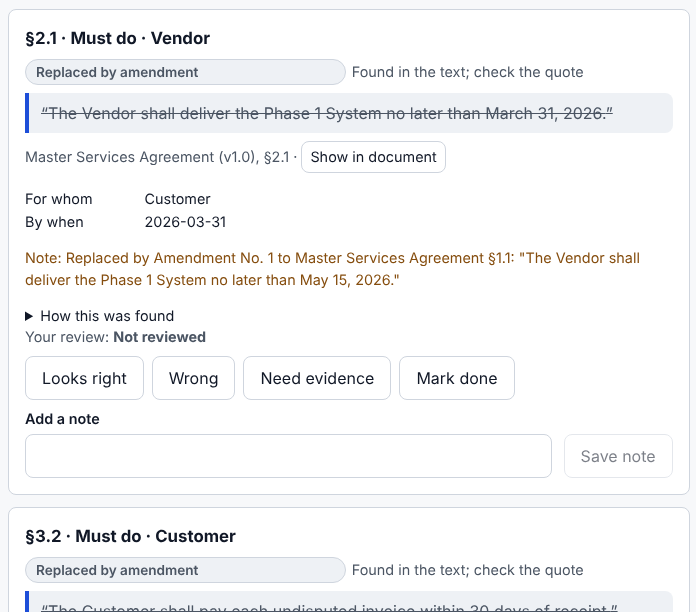
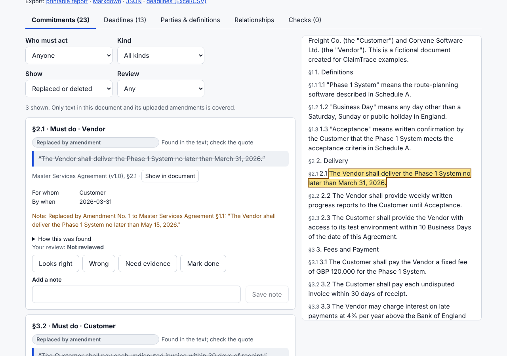

In your browser
No install, no account. The engine runs in the tab.
Your file is never uploaded.
ClaimTrace maps who owes what, and answers only with verified quotes.
Nothing is uploaded.
Or use it with Claude, or install it.

With no supporting text, the answer is “I could not find support for this in the uploaded documents.”
Obligations, deadlines and conditions, each tied to the exact characters it came from.

Answers lead with the wording in force. When documents disagree, you see both quotes.

Contract against amendment, audit report or delivery record.
$ claimtrace verify <contract> <audit report>
Scored without tuning on sealed cases nobody opened before the code was frozen; re-scored once after the review fixes, with identical results.
| Measure | ClaimTrace | Keyword floor |
|---|---|---|
| Hallucination rate, lower is better | 0.00 | 0.50 |
| False all-clear rate, lower is better | 0.03 | 0.29 |
| Contradictions, precision and recall | 0.83 / 0.71 | 0.00 recall |
| Consistency checks | 0.81 | 0.76 |
| Amendment checks, unfamiliar wording | 0.60 | 0.06 |
| Amendment effect, unfamiliar wording | 0.71 | not scored |
Four in ten amendment checks on unfamiliar wording are wrong. Check amendments yourself.
On consistency, a constant “consistent” guess does about as well. All cases are synthetic.
No install, no account. The engine runs in the tab.
Your file is never uploaded.
A skill for Claude.ai, or a plugin for Claude Code.
Documents you share go to Anthropic.
Python and Node, or Docker Compose.
Sends nothing out by default.